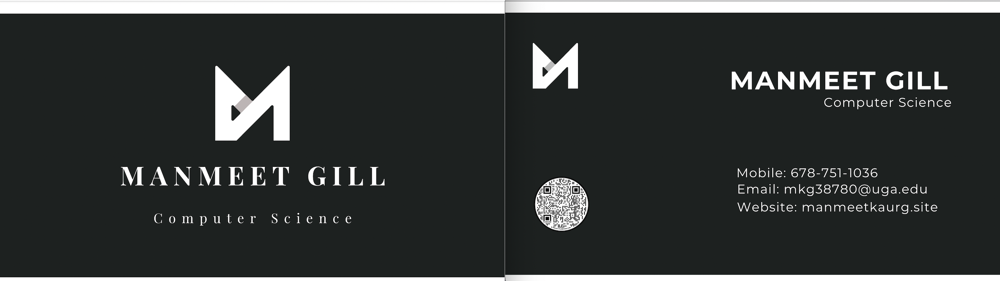
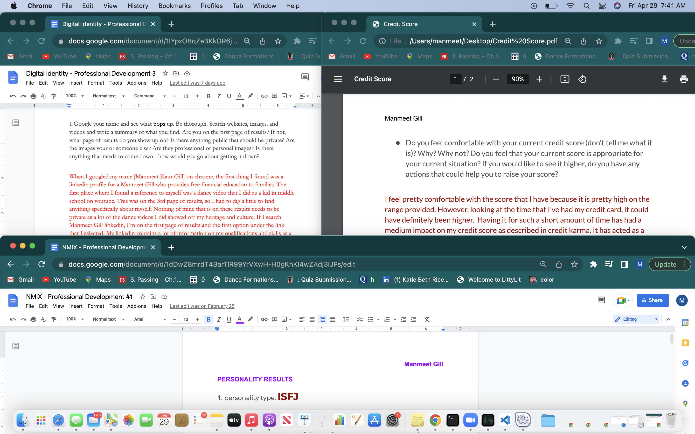

Home to the Innovation Hub, Digital Brown Bag has taught me so much on how to grow not just academically but also professionally. I was able to meet and ask
questions to incoming speakers such as Shelby Clayton from Twitter and Ben Bolton from Verizon. Every one of the speakers talked not only just about what they did, but they also just talked about general life advice for when they were
in college and how they are where they are at now. I learned that progress is not linear but instead its about pushing your way up regardless. I am
so happy to have gotten the opportunity to take part in this experience!

One of my favorite things that we did for NMIX was when we created our very own business cards to hand out to speakers and connections we met throughout our time in college. The professionalism
that came with having a business card was so amazing! Along with the business card, we got to learn a lot about relevant topics like how to utilize a credit card efficiently and what it means to have health insurance! The structure of the class itself
was so professional in that attendance, work policy, etc were all structured the way a real job would be. I got to learn so many insiders on what it means to work at an actual job!

Throughout this semester, we were also tasked with picking out 3 professional development tasks that would get us to be introspective about ourselves and our goals for our careers. The three tasks that I choose
were Personality Assessment, Credit Cards, and Digital Identity. The first one gave me more insight on my credit score and why I had the score that I did. The second one went more in depth with the social media I was using and in what ways
it developed me professionally. The third one was actually very interesting. I was able to assess the type of person I was, and based on this, I was given job titles that would suit me best! These tasks were so much fun!